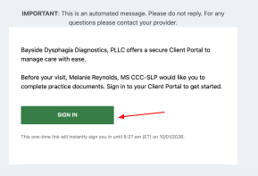
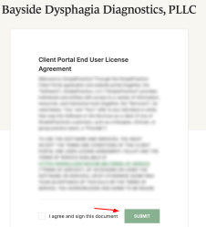
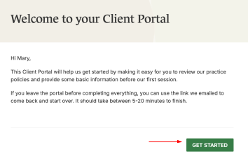
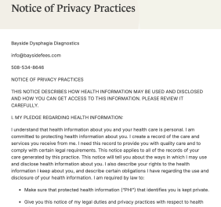
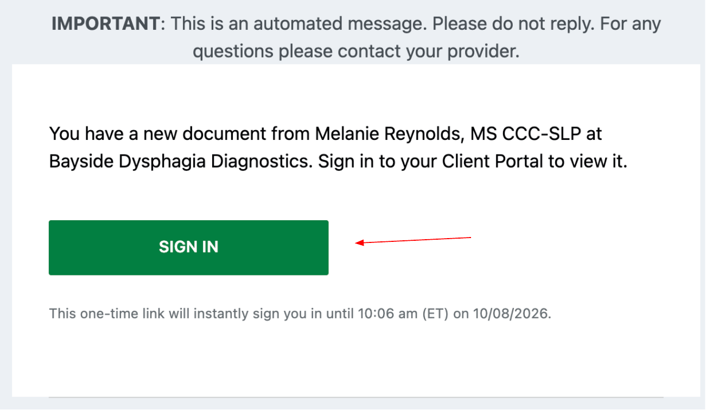
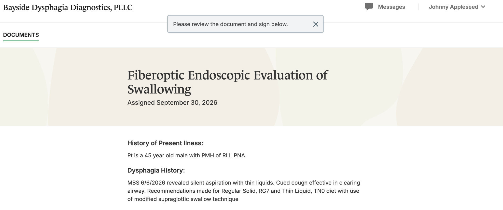
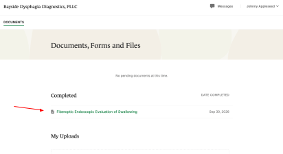
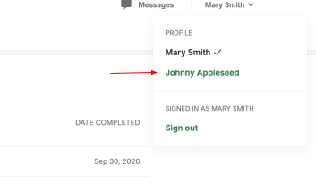
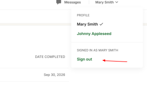

FOR EXISTING CLIENTS
Client Portal Guide
BDD uses a secure, HIPAA-compliant Client Portal to receive FEES referrals and deliver completed evaluation reports. This guide walks facility staff through first-time setup, switching to a patient's portal, and retrieving a patient's report.
Getting started
Complete the initial portal setup from the welcome email sent by Bayside.
Open your welcome email
You'll receive an email from Bayside Dysphagia Diagnostics. Click SIGN IN to access the portal.

Accept the user agreement
Check “I agree and sign this document”, then click SUBMIT.

Get started
You now have access to your Client Portal. Click GET STARTED.

Agree to Privacy Practices
Review the Notice of Privacy Practices and click AGREE at the bottom of the page.

Referrals & reports
Use your portal to complete the FEES Intake form, move into a patient's portal, and access completed documentation.
Access and complete the FEES Intake form
You'll receive an email when the FEES Intake form is ready. Click SIGN IN to open it in your Client Portal, then complete and submit the form.

Switch to the patient's portal
Once the patient is entered, use the name pull-down at the upper right to move between your portal and the patient's.

Review & e-sign the FEES report
When the evaluation is complete, open the report under the patient's name, e-sign it, and download the file.

Add the report to the medical record
Once signed, the FEES report will be downloaded to your computer for you to upload to your patient's medical record.

Toggle between portals
Use the same upper-right pull-down (as in Step 6) to return to your own portal.

Always sign out
Click Sign out from the pull-down at the end of every session — especially on shared facility computers.

Questions or trouble signing in?
We're happy to help you get set up.